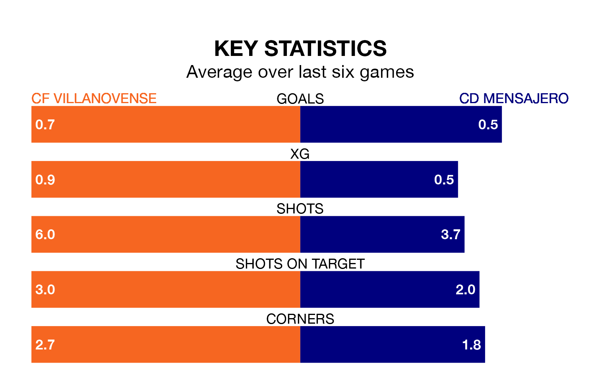

CF Villanovense host CD Mensajero on Sunday at the Estadio Municipal Villanovense in the Segunda División RFEF Group 5.
In their last league match, on March 24, Villanovense lost to Getafe B 4-1 away, with their goal scored by Victor Uzochukwu Ogumka Adighube.
Mensajero also lost, 1-0 at home against CDA Navalcarnero.
Mensajero are 17th in the table after 28 games, of which they have won five and drawn 10, earning 25 points.
Villanovense are six places ahead of the away team in 11th, with 10 wins and six draws putting them on 36 points.
With 25 goals in 28 games so far this season, Mensajero are scoring at below the league average rate with 0.9 goals per game. And they are conceding more than average, letting in 38 goals at a rate of 1.4 per game.
The hosts are also below average scorers, with 0.9 goals per game, compared to a league average of 1.1. They have conceded 1.0 goal per game.
Villanovense are in mixed form in the Segunda División RFEF Group 5, with two wins and a draw from their last six games.
With two wins and four losses over that period, Mensajero's form is slightly worse – they have taken six points from 18, compared to Villanovense's seven.
In the last three years, Villanovense and Mensajero have played each other on three occasions. They won one each, and they drew once.
Their last meeting was on November 19, when Villanovense won 2-1 away.
Updated: 10:31 (UTC), 31/03/24